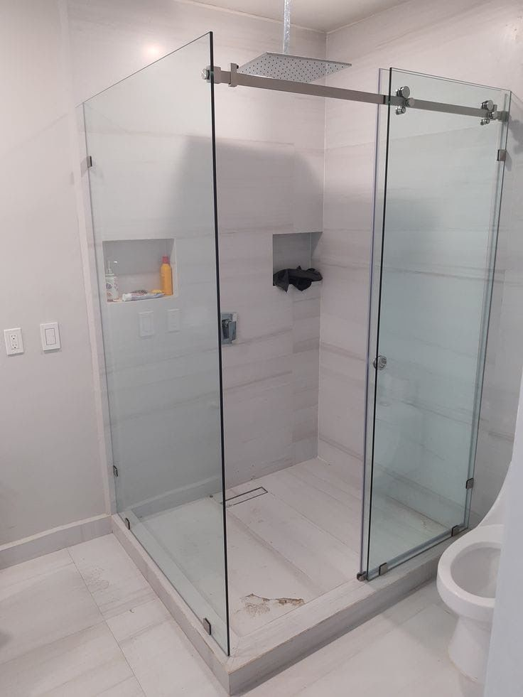
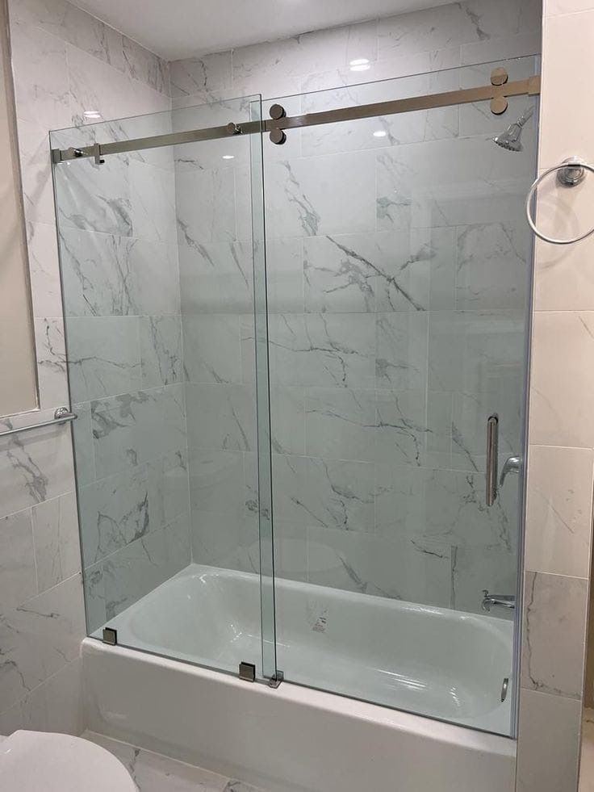
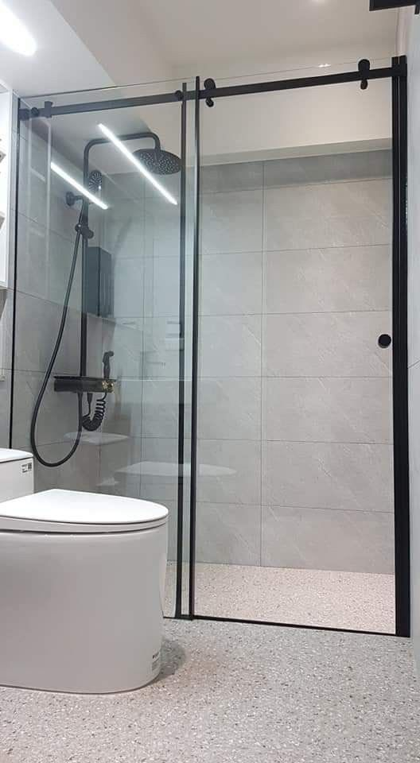

01
01
Parois de douche
Parois fixes, à l'italienne, portes battantes ou coulissantes. Verre trempé de sécurité, profilés noir mat, chromé ou inox.
- Verre trempé 8 ou 10 mm
- Fixe, battante, coulissante ou d'angle
- Traitement anticalcaire en option
Parois de douche & miroiterie sur mesure
ELA Glass conçoit, fabrique et installe des parois de douche, portes en verre et miroirs sur mesure. Verre trempé de sécurité, profilés alu, finitions soignées — un travail précis, du premier relevé jusqu'à l'installation finale.
Notre savoir-faire
Chaque pièce est mesurée, fabriquée et posée sur mesure — au millimètre près, dans le verre et les finitions de votre choix.
01
Parois fixes, à l'italienne, portes battantes ou coulissantes. Verre trempé de sécurité, profilés noir mat, chromé ou inox.
 02
02
Portes battantes ou pivotantes en verre trempé, cloisons vitrées et séparations, en verre clair ou dépoli.
 03
03
Miroirs sur mesure, verre décoratif, sablage et sérigraphie personnalisés pour habiller et agrandir vos espaces.
 04
04
Garde-corps d'escalier, de balcon ou de terrasse en verre feuilleté, fixations inox — la sécurité sans rien masquer de la vue.
Détails techniques
On ne pose pas qu'une vitre : chaque projet est assemblé avec le verre et l'inox adaptés à l'usage — c'est ce qui fait tenir une paroi et sécurise un garde-corps dans le temps.
Portfolio
Une sélection de parois et de portes posées chez nos clients — fabriquées et installées par notre équipe.





Pourquoi ELA Glass
Un technicien relève chaque cote sur place avant la moindre découpe de verre.
Un verre résistant et sûr, conforme aux normes, sur toutes nos réalisations.
Chaque paroi, porte ou miroir est fabriqué aux dimensions exactes de votre espace.
L'installation est réalisée par nos propres poseurs, sans sous-traitance.
Un planning clair annoncé dès le relevé, jusqu'à la pose finale.
Joints nets, alignements parfaits, quincaillerie de qualité : le souci du détail.
Notre méthode
De l'échange initial à la pose finale, nous encadrons chaque étape pour vous garantir le meilleur résultat.
Échange sur votre projet, l'espace disponible et le type de verre et de finitions souhaités.
Déplacement à domicile pour un relevé précis et la validation technique du projet.
Découpe et façonnage du verre trempé sur mesure, selon les cotes relevées.
Pose soignée par notre équipe, avec vérification finale et nettoyage du chantier.
Tarifs
Prix indicatifs de départ, hors options et finitions. L'estimation exacte est donnée après la prise de mesure gratuite à domicile.
à partir de 1 200 DH / m²
à partir de 1 500 DH / ml
à partir de 600 DH / m²
Questions fréquentes
Contact
Décrivez-nous votre projet : nous revenons vers vous sous 24h pour organiser une prise de mesure gratuite.
Envoyez vos dimensions approximatives et une photo de l'emplacement. On vous répond avec une estimation, puis on organise la prise de mesure gratuite à domicile.
Écrire sur WhatsAppRéponse rapide. Prise de mesure à domicile gratuite et sans engagement.